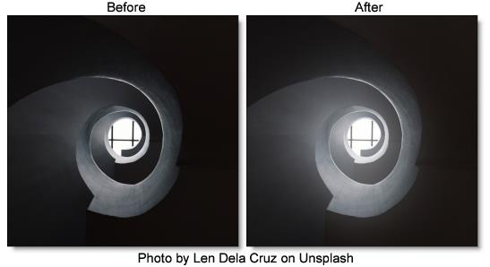

Low Contrast
Description
Low Contrast spreads highlights into darker areas, lowers contrast and keeps bright areas bright.
Category
Color.
Controls
Presets
To select a preset, pick one from the Presets window.
Contrast
Light Brightness
Sets the intensity of the light that is spread into darker areas.
Light Spread
Sets how far light is spread from bright areas to darker areas.
Shadow Brightness
Adjusts the brightness of the shadow areas.
Matte
A matte is used to create the light spread effect. Go to the
Matte section of Common Filter Controls to see how the Matte controls work.